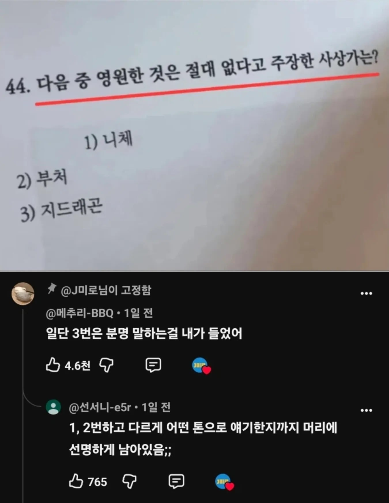

영원한 것은 절대 없다고 주장한 사람은?.📝
댓글
결국에 넌 변했지~
영원한건~ 절대없어~
3번아님?
여워냔견~ 즑때읍써~
다 얘기한 거 같은데 ㅋㅋㅋ
답은 2번이긴해
구라치지 마 한국말도 못할거같은데
ㅋㅋㅋㅋㅋㅋㅋㅋㅋㅋㅋㅋㅋㅋㅋ

일음설법(一音說法): 대승경전인 《유마경》 등에는 "부처님께서 하나의 소리로 말씀하시면, 중생들은 각자의 언어와 부류에 맞게 알아듣는다"는 내용이 나옴. 이를 '부처님의 원음(圓音)'이라함. ㅡ 한국어 가능할듯.
부처님 gpt셨네 ㅋㅋ
ㅋㅋㅋㅋㅋㅋㅋㅋ
시발ㅋㅋㅋㅋㅋㅋ
부처님이 에너지 보존 법칙을 모르셨나본데
1,2 인가?
지드래곤.... 사상가.... 흠...... 3번이 답인데?
어차피 난 고자였지
이유도 없어~ 진심이 없어~
영원한 건, 절대 엄써, 어차피 난, 혼자여찌
조pd아님?
사랑조차 영원하지 않은 세상에서
그 무엇이 불멸을 말할 수 있으리
3번은 분명히 들었다고
지드래곤은 사상가가 아니니까 답이아니다 라는게 되려나?
자신의 노래로 이런 사상이 있음을 오히려 대중적으로 빠르게 알리는 사상가가 아니던가!?
GD 정도면 살아있는 시인이고 사상가 아니냐ㅋㅋ
D의 의지 모름?
그럼 사상가 정의부터 들어가야됨 ㅋㅋㅋㅋ
제목보자마자 쥐쥬래갠 생각함
오늘밤은 삐딱하게~

대중의 마음을 울리고 깨달음을 줬으니 지드래곤은 saint dragon 인거네 ㄷㄷ
지~용(삼성톤으로)
진짜 엄밀히 말하면 3번이긴 함ㅋㅋㅋㅋㅋㅋㅋ
영원성을 극한으로 따지면 깊게 논의한적 없는 지디밖에 안남아서 ㅋㅋㅋㅋ
니체는 초월이라는 개념을 활용해서 생과 사의 순환을 극복할 가능성을 남겨뒀고
부처도 엄밀하게는 영원불멸이 없는거지 영원 자체를 부정하지는 않음ㅋㅋ오히려 무조건 유한이라는 힌두식 내세 개념을 거부함ㅋㅋ

이터널리턴 ㄷ
지디 맞잖아
Nothing lasts forever
지디가 부처의 환생이구나
권희동
한국인은 1명 뿐인데 문제 개쉽네 ㅋㅋ
영원한 건 절대없어 라는 말만 빼고 나머지는 절대없어~
아니, 근데 시험지 보기가 1번은 왜 한탭 들여쓰기 되어있어? 이게 답이라고 알려주는건가?
영원한 서식은 없는것
아난다여
문제가 쉽네~ 거저주는 문제 3번
다 의미없어. - 니체
결국에 넌
변했지